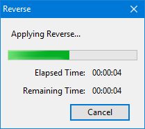

Reverse
Reverse reverses the selected audio, so that the end of the audio will be heard first and the beginning last. Some people reverse small portions of audio to make inappropriate language unintelligible, while others believe you can hear subliminal messages if you listen to speech backwards. You can also create interesting sound effects by recording natural events and reversing the audio.
| Please note that Note Tracks cannot be reversed (as they are nor really audio, merely a form of musical "score") |
- Accessed by:
- There are no parameters to set for this effect; the effect operates on the audio that is currently selected.
- A Label Track can only be reversed, in full or in part, if it is selected along with some associated audio.
- If the reversal takes an appreciable time, a progress dialog will appear as below:
- 
- Reverse progress dialog
If the track or tracks in which your selection is made form part of a Sync-Locked Track Group then all audio within the selected time range in all tracks of that Sync-Locked Track Group will be reversed, as will labels within any associated Label track.